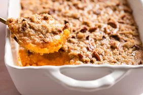
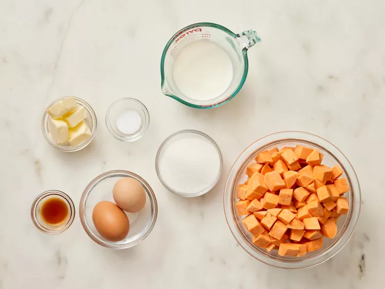

Yummy Sweet Potato Casserole

Description
This baked sweet potato casserole topped with a delicious pecan topping is
so delicious it’ll turn a holiday staple into a weekly favorite!
Ingredients
Sweet Potatoes:
- 4 cups peeled, cubed sweet potatoes
- 2 large eggs, beaten
- 1/2 cup white sugar
- 1/2 cup milk
- 4 tablespoons butter, softened
- 1/2 teaspoon vanilla extract
- 1/2 teaspoon salt
Peacan Topping:
- 1/2 cup packed brown sugar
- 1/3 cup all-purpose flour
- 3 tablespoons butter, softened
- 1/2 cup chopped pecans
Steps
- Gather the ingredients. Preheat the oven to 325F (165C)

- Put the sweet potatoes in a medium saucepan and cover with water.
Cook over medium-high heat until tender, 10 to 15 minutes. Drain
and transfer to a large bowl.

- Mash drained sweet potatoes with a fork, Add eggs; mix until well
combined. Add sugar, milk, butter, vanilla, and salt; mix until
smooth. Transfer to a 9x13 inch baking dish.

- To make the topping: Mix brown sugar and flour together in a
medium bowl. Cut in butter with a pastry cutter until mixture is
coarse and looks like peas; don't overmix. Stir in pecans. Sprinkle
topping over sweet potato mixture.

- Bake in the preheated oven until topping is lightly browned, about
30 minutes.

- Serve and enjoy!

Home